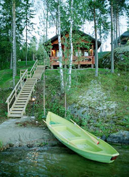

Из Выборга в Хельсинки. Описание велосипедного маршрута
10 - 16 июня 2006 года
Пустынные дорожки и скалы - визитная карточка Финляндии |
Маршрут похода соединяет Выборг и Хельсинки. В этом есть не только географическая, но и историческая логика. Выборг является древнейшим городом региона и важнейшим пунктом в Финской истории. Среди других интересных городов на нашем пути - Лаппеенранта и Порвоо. Они также хранят следы непростой истории этих мест, где веками проходило противостояние Российской и Шведской короны, а позднее - борьба Финляндии за независимость.
Маршрут проложен по тихим и живописным дорогам с минимальным количеством транспорта. Около 70 км мы проедем по велодорожкам. Дневные пробеги - умеренные, что позволяет участвовать не очень подготовленным людям. Тем не менее, мы призываем участников потренироваться.
Основные достопримечательности по маршруту сконцентрированы в городах: в Выборге, Лаппеенранте, Порвоо и Хельсинки. Но не меньший интерес представляет и финский сельский пейзаж: нечастые ухоженные хутора с поднятыми над ними флагами, сельская церковь и кладбище, старая усадьба, школа с велостоянкой, дорога, изгибающаяся по контуру небольшого частного поля, на поле - копны сена в полиэтиленовой упаковке… Порядок и любовь, с которой все это содержится.
Начальная часть маршрута проходит вдоль Сайменского канала с его многочисленными шлюзами, а затем - среди озер Сайменской системы. Далее нас окружает типичный ледниковый ландшафт: озовые гряды и котловины с зеркалами небольших озер. По мере приближения к Порвоо среди лесов все чаще попадаются поля. А в Хельсинки мы въезжаем вдоль шхерного берега Финского залива.
Все ночевки организуются под крышей: в избушках на 4-8 человек ( cottages / cabins ), "хостелах" ( hostels ) и недорогих гостиницах. В некоторых местах будет возможность сходить в сауну. Все места ночлегов бронируются заранее.
10.06.05 Пятница. Выборг - Лаппеенранта. 70 км.
Первый день путешествия - традиционно самый трудный. Утром (07:54) мы грузимся на скорую электричку, которая за 1.5 часа домчит нас до Выборга. Наконец, в седло. По улицам просыпающегося Выборга, мимо крепости, мы проезжаем к высокому мосту над выходом Сайменского канала в Финский залив. Останавливаться на этом стратегическом мосту нельзя, но можно ехать медленно и любоваться окрестными водными просторами и островами.
За мостом - первый КПП. Надо учесть, что неоднократная проверка документов - одно из наших основных развлечений сегодня. Оно оплачено Вами в рамках стоимости тура, поэтому не стоит торопиться и нервничать.
Через несколько километров после выезда из Выборга дорога выходит к берегу Сайменского канала. Канал соединяет огромную внутреннюю водную систему Финляндии с Финским заливом, и имеет важное экономическое значение. Попытки соединить оз. Саймаа с морем предпринимались еще в 16 веке, но первый канал с 28 шлюзами был построен только в 1856 г, при Александре II . В 20-х годах Финляндия, получившая независимость, начала реконструкцию канала. Работы были прерваны войной. После ее окончания (и перехода части канала к СССР) в течение 20 лет канал был закрыт. В 1962 г было достигнуто соглашение об аренде Финляндией советской зоны канала на 50 лет, были возобновлены строительные работы, и в 1968 г был открыт современный канал с 8 шлюзами. Местами водный путь проходит по водохранилищам, местами он пробит в скалах. По пути мы можем увидеть работу шлюзов… и заглянуть в магазин беспошлинной торговли.
Наконец, наши документы проверены в N +1-й раз - и мы в Финляндии. Вначале движемся по основной дороге, потом сворачиваем на прибрежную грунтовочку и едем наперегонки с судами. Наконец выезжаем на велодорожку, которая и выводит нас в Лаппеенранту. Здесь мы селимся на местной турбазе и отдыхаем после трудного дня (расстояние небольшое, но проверки…).
11.06.05. Суббота Лаппеенранта - Хейтуинлахти. 63 км.
Лаппеенранта получила права города в 1649 г. от шведской королевы Кристины. В 1721 г. для охраны границы здесь был размещен военный гарнизон и начато строительство крепостных сооружений. Недостроенная крепость была захвачена русскими в сражении 23 августа 1741 г. и отошла к России по Туркскому мирному договору 1743 г., на 70 лет раньше, чем была завоевана вся Финляндия. Императрица Елизавета приказала отлить медаль в честь этого события. Позже Густав III произвел попытку вернуть потерянные земли, но она не увенчалась успехом. Не завершенная шведами крепость была достроена русскими. Возведением мощной цепи оборонительных сооружений в юго-восточной части Финляндии руководил А.В. Суворов.
Крепость является главной достопримечательностью города. Здесь же находится старейший православный храм в Финляндии - церковь Покрова Богородицы, построенная русскими солдатами в 1785 г, а также ряд музеев и сувенирных лавок. Из крепости приятно спуститься к живописной набережной озера Саймаа и пассажирскому порту. Какое-то время можно уделить и шоппингу.
Велодорожка выводит нас из Лаппеенранты. Иногда она переходит по тоннелю с одной стороны дороги на другую. Здесь требуется внимание: во-первых, чтобы не потеряться, во-вторых, чтобы не столкнуться с внезапно появившимся из велотоннеля "горячим финским парнем".
Среди озер и парков (а затем и лесов) мы едем на север. Через 15 км велодорожка кончается, но редкие машины не затрудняют движения. А вот холмы попадаются.
На пути к Савитайпале мы видим несколько церквей; одна из них - современная, остальные - традиционные.
Мы ночуем в небольших избушках на берегу живописного озера. Желающие сходить в сауну, вероятно, получат такую возможность.
12.06.05 Воскреснье. Хейтуинлахи - Каусала. 90 км.
Мы продолжаем путь на запад по тихой и живописной дороге, среди ледниковых холмов, поросших сосновым лесом. Иногда по сторонам дороги возвышаются гранитные уступы.
Мы делаем остановку в любопытном месте: у выставки примитивной скульптуры, созданной солдатами соседней воинской части. Не всегда талантливо, иногда немного вульгарно - но любопытно. По пути можно остановиться и еще разок - для сбора грибов.
Дорога выводит нас к реке Кюмийоки и городу Куусанкоски. Город невелик, но и через него мы едем по велодорожке.
Еще 20 км - и мы приезжаем в Иитти. У дороги стоит большая деревянная церковь, построенная местными крестьянами в 1693 г.
Неподалеку отсюда мы и заночуем в деревянных избушках.
13.06.05. Понедельник. Каусала - Порвоо. 90 км.
Двигаясь от Каусалы на юг, мы постепенно въезжаем в более обжитой район. Только не надо понимать это буквально: транспорта по-прежнему мало. Но чаще попадаются симпатичные хутора, а лесные пейзажи иногда уступают место аккуратно убранным полям.
К вечеру мы приезжаем в Порвоо - один из старейших городов Финляндии. Порвоо располагался на "Королевской дороге", соединявшей Россию и Швецию, и получил права города в 1346 г. Здесь не раз бывали царствующие особы династии Романовых. Здесь проходила I сессия финского парламента, созванная императором Александром I , и утвердившая автономные права Великого Княжества Финляндского. Местный собор датируется 1414 г. Своеобразие городу придают спускающиеся от него узкие мощеные улочки, а также хорошо сохранившиеся старые деревянные постройки, протянувшиеся вдоль берега реки Порвоойоки. В старой ратуше (1764 г.) располагается исторический музей. Многочисленные кафе смотрят с набережной на пришвартованные у берега яхты и катера.
В Порвоо мы ночуем в "хостеле", рядом с центром города.
14.06.05. Вторник. Порвоо - Хельсинки. 60 км.
Сеть мелких дорожек выводят нас из Порвоо на запад. В 6 км от города мы видим усадьбу Хайкко Манор. С 13 в. эти земли принадлежали мужскому монастырю Доминиканского ордена.
В эпоху российского правления члены царской семьи не раз посещали Хайкко Манор летом. Великий князь Владимир с женой Марией Павловной останавливались в усадьбе, совершая круиз по Финскому архипелагу.
Великий князь Кирилл с семейством нашел здесь прибежище, когда в ноябре 1917 г. перешел по льду Финский залив, спасаясь от революционного правительства. В 1918 г. в Хайкко Манор родился и был окрещен его старший сын, несостоявшийся наследник Российского престола Владимир Кириллович.
Немного западнее Хайкко находится еще одна усадьба - Кулло, живописный архитектурный ансамбль 18-19 вв.
Большая часть пути до Хельсинки проходит по велодорожке. Время от времени слева видны просторы Финского залива. Постепенно велодорожка отдаляется от шоссе, внедряется в жилые кварталы, уходит в парковую зону - и незаметно мы въезжаем в Хельсинки. Длинный мост через пролив открывает впечатляющую панораму прибрежных шхер.
В Хельсинки мы остановимся в тихой и уютной гостинице недалеко от центра города.

15.06.05. Среда. Хельсинки
Воскресенье - день отдыха. Поэтому мы предоставим вам возможность немного отдохнуть от своих товарищей по группе и ее руководителей, и провести день в Хельсинки в соответствии со своими устремлениями.
Не верьте тому, кто скажет, что Хельсинки - это дыра и не "заграница". Хельсинки - не Париж, но есть свое очарование в его модерне и ампире, в зелени Эспланады и эклектике нешироких улиц, в изрезанной береговой линии и огромных паромах в его гавани.
Любителям архитектуры можно порекомендовать церковь в скале, Успенский собор, здания Национального театра и Дворца "Финляндия". Тем, кого манят история и морские просторы - путь в островную крепость Суоменлинна, которую русская армия обороняла от англо-французского флота в период Крымской войны. В музее Атенеум можно увидеть работы импрессионистов, но более интересны полотна финских художников Эдельфельта, Галлен-Каллела, … и, конечно, Репина. В Хельсинки есть и ночная жизнь (кстати, весьма оживленная в субботу). Найдут чем заняться и любители шоппинга.
16.06.05 Четверг Трансфер в С-Петербург . Около полудня наш автобус отправится в обратный путь - при нормальном прохождении границы это обеспечит нам возвращение в Петербург к вечеру.
Цена путешествия 290 Евро.
В эту сумму входит:
• Организация и проведение путешествия.
• Трансфер в Выборг и из Хельсинки.
• Все ночлеги.
• Все завтраки, кроме дня отправления.
• Во все ходовые дни – обед-пикник, энергетическое питание
• Микроавтобус сопровождения, перевозящий багаж участников.
В эту сумму не входит:
• Консульский сбор – около 35 Евро.
• Страхование. Медицинская страховка стоит около 0.8 Евро/день.
• Дневное питание в Хельсинки.
• Экскурсии и входная плата в музеи и т.п.
NB . Данное описание - это план путешествия. Организаторы сохраняют за собой право на его изменение в зависимости от конкретной ситуации.